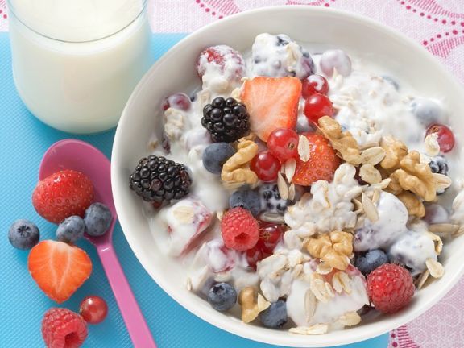

Cereal with berries

Description
A very simple meal, for any time of the day. Packed with protein and other nutrients
it is a perfect companion for a diet and a healthy lifestyle.
Ingredients
- 160 g Curd cheese
- 500 ml Buttermilk
- 160 g Oat flakes
- 500 g Mixed berries (fresh)
- 30 g Wallnuts
Steps
- Mix curd cheese with buttermilk. Mix in oat flakes and leave it to rest for 5 Minutes
- In the meantime, wash the berries, dry them and cut them into quarters or halves
- Crush wallnuts into small pieces
- Put some berries aside, mix in the rest with the curd cheese mixture
- Pour into bowls, use the remaining berries, together with crushed wallnuts, for decoration
Sources